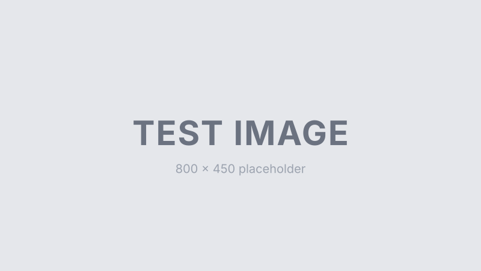

テストページ
これは GitHub Pages へのデプロイを確認するためのテストページです。本番のブログ記事ではなく、レイアウト・ルーティング・配信の動作確認用です。

確認したいこと
https://tastasworld.github.io/test/で表示されるか- レスポンシブ表示 (PC / スマホ両対応)
- 画像が表示されるか
- 文字化け / フォントが問題ないか
- ダークモード切り替えが効くか
このページについて
このページは本番ブログのテンプレ／SSG確定後に削除または置き換えられる予定です。noindex 設定済み。